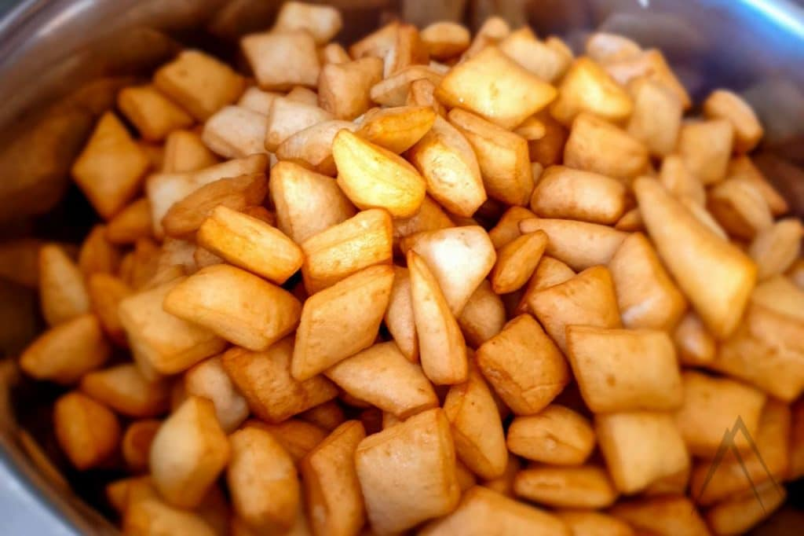

Boorsok is a traditional flour product of the Kyrgyz people. It is very simple to prepare, but incredibly delicious. It is so versatile that it can be used for tea, for shorpo (soup), for cold and hot snacks, for fermented milk drinks (kymyz, ayran). Boorsok is without exaggeration a table decoration, since its preparation often accompanies Kyrgyz national holidays and family celebrations.
Boorsok is easy to prepare. We need just:
Few steps and ready: